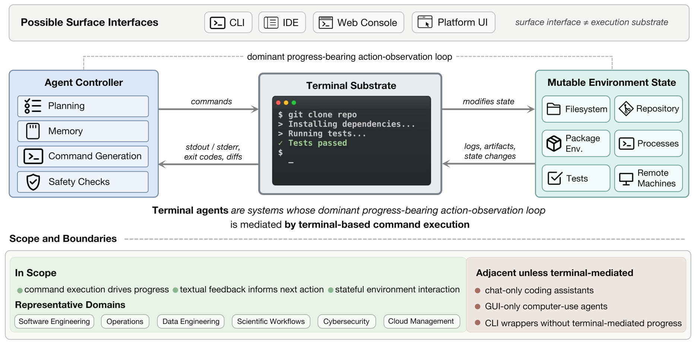
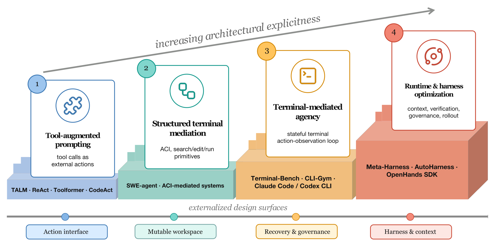
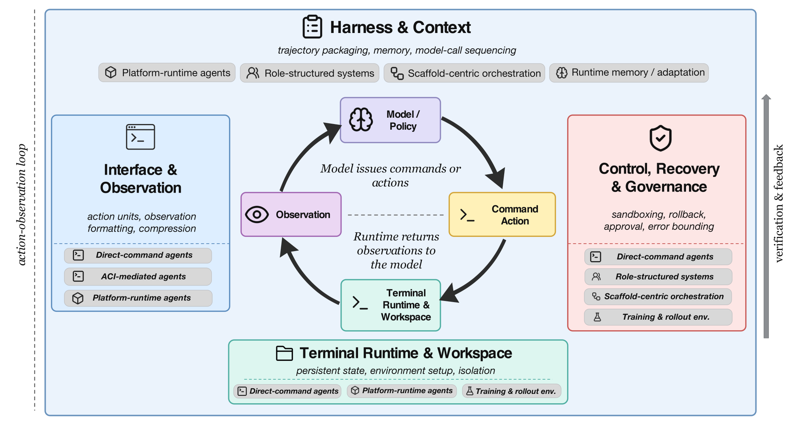
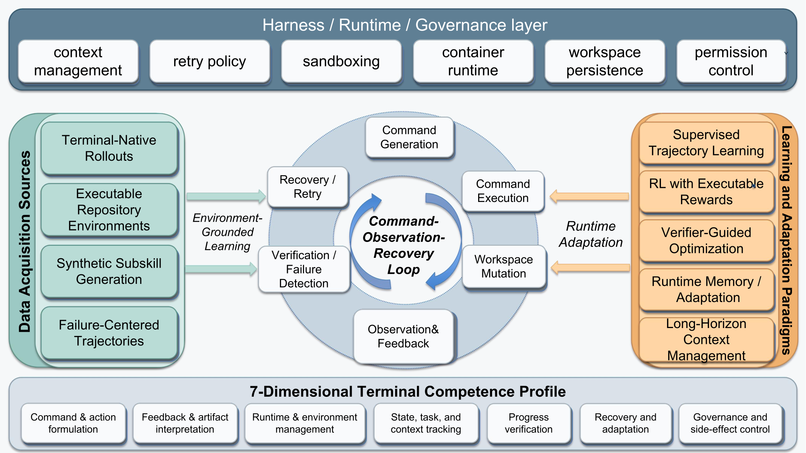

Command & Action
Translate goals, constraints, and state into executable operations.
A unified execution-substrate view of how AI agents formulate commands, interpret textual feedback, manage mutable environments, verify progress, recover from failure, and control side effects.
* Corresponding author · shenhengtao@hotmail.com
The terminal is an execution substrate rather than merely a visible interface. Commands mutate persistent state, observations expose inspectable evidence, and later decisions depend on the resulting workspace.

Terminal-mediated agency emerged as interfaces, mutable workspaces, runtime control, recovery, governance, and harness context became explicit design surfaces.


The profile organizes recurring responsibilities by the object being controlled, the evidence required for the next decision, and the response needed when execution diverges from the task.
Translate goals, constraints, and state into executable operations.
Extract evidence from output, logs, diffs, traces, and files.
Prepare dependencies, services, processes, and execution constraints.
Maintain workspace state, history, facts, and unresolved goals.
Check intermediate validity, artifact trustworthiness, and completion.
Diagnose failure, revise hypotheses, replan, and retry from evidence.
Respect permissions, sandboxes, approvals, credentials, and limits.
Model, interface, harness, runtime, and environment jointly shape observed behavior. Recovery depends on feedback interpretation, state tracking, and verification; long-horizon persistence combines several dimensions at once.

Outcome scores remain essential, but process, environment, trace, and governance evidence determine what can be concluded about how an agent reached the result.
Did the task complete under the benchmark-native evaluator?
How did the agent formulate actions, use feedback, and recover?
Was runtime setup, persistence, and state validity established?
Can commands, observations, state changes, and checks be inspected?
Were permissions, containment, reversibility, and side effects visible?
SWE-bench · Claw-SWE-Bench · SWE-PolyBench
Terminal-Bench · TerminalWorld · LongCLI-Bench
SetupBench · OctoBench · ProcBench
BashArena · ClawSafety · policy-focused protocols
Four connected priorities follow from the survey's architecture, acquisition, and evaluation evidence.
Separate reusable substrate-level capabilities from workflow-specific heuristics across operations, data engineering, science, cloud management, and security.
Combine live or regenerated tasks with traces that preserve commands, observations, state changes, interventions, and verifier calls.
Assess task success together with authorization, containment, reversibility, destructive-action prevention, and external side-effect control.
Vary model, interface, harness, or runtime while preserving task identity and execution conditions to isolate transferable gains.
The public preprint provides the paper entry point. The companion repository maintains the curated reading list and project materials.
@article{yuan2026terminal,
title={Terminal Agents: A Survey of AI Agents in Command-Line Environments},
author={Yuan, Xiaoyang and Zeng, Haoxi and Ye, Wencheng and Bin, Yi and
Shao, Wenqi and Qian, Chen and Ye, Wei and Ding, Yujuan and
Wang, Zheng and Zeng, Pengpeng and others},
year={2026},
publisher={Preprints}
}